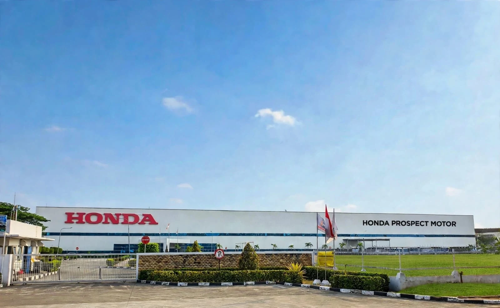
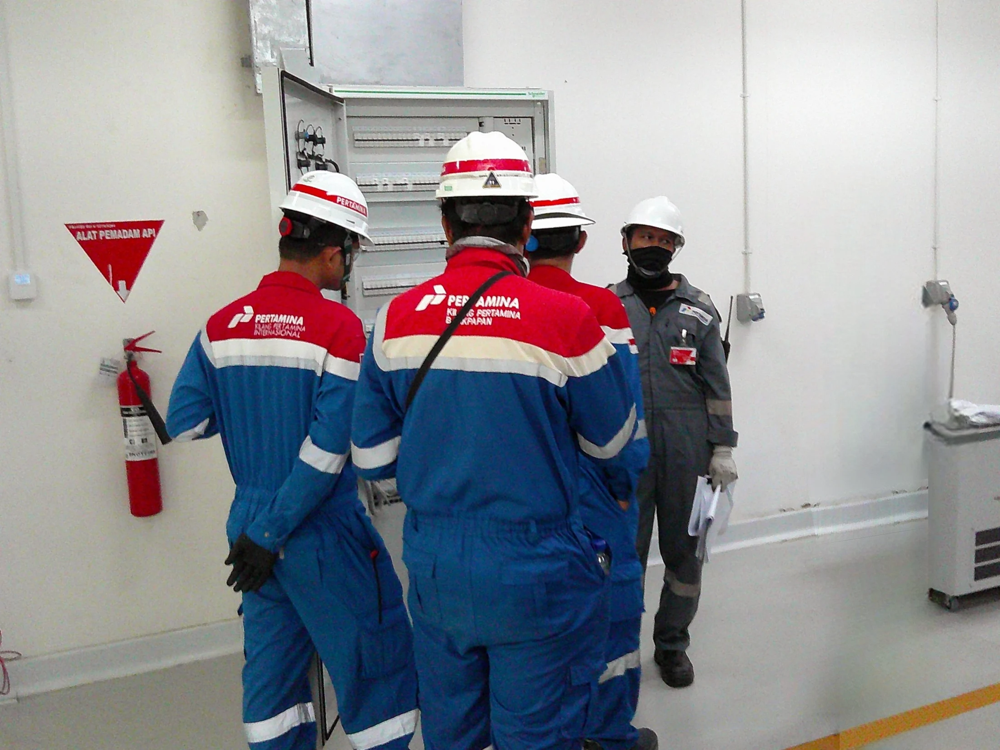

REKAYASA MEP SEJAK 1980
PRECISION
IN EVERY
SYSTEM.
Solusi mekanikal, elektrikal & plumbing untuk bangunan gedung dan industri. Dari perencanaan hingga pelaksanaan.
Jelajahi ProyekKeahlian KamiPengalaman panjang.
Presisi di setiap pekerjaan.
Sejak September 1980, PT. Multi Karya Persada hadir sebagai mitra pekerjaan mekanikal dan elektrikal untuk gedung dan industri di Indonesia.
Kami menangani instalasi elektrikal, mekanikal, VAC, elektronik, plumbing, dan proteksi kebakaran. Dedikasi kerja, pelayanan, dan kepuasan pelanggan menjadi dasar setiap pekerjaan, dengan supervisi langsung dari direksi.
Kenali Kompetensi KamiSambutan Direksi
Dedikasi untuk Setiap Pekerjaan
OUR PARTNERS
Mitra & pelanggan kami
Bagian dari perjalanan engineering kami.
Jeda untuk menjelajahi logo. Geser atau gunakan tombol panah.
Enam keahlian.
Satu sistem terintegrasi.
Dukungan teknis untuk kebutuhan operasional bangunan, mulai dari distribusi tenaga listrik hingga sistem proteksi kebakaran.
Keahlian yang
terlihat di lapangan.
Pengalaman lintas sektor, dari fasilitas manufaktur dan logistik hingga laboratorium dan bangunan komersial.
Pilihan dokumentasi dari 456 proyek yang tercatat dalam company profile perusahaan.

CARA KAMI BEKERJA
Teknis yang terarah.
Komitmen yang nyata.
Supervisi Langsung
Pengawasan direksi dan dukungan tenaga teknik bersertifikat dalam pelaksanaan pekerjaan.
Kualitas & Keselamatan
Komitmen pada standar teknis serta keselamatan dan kesehatan kerja di setiap proyek.
Hubungan Jangka Panjang
Pelayanan yang responsif untuk membangun kerja sama berkelanjutan dengan pelanggan.
Didukung kompetensi.
Dijalankan dengan integritas.
Kualifikasi badan usaha dan kompetensi tenaga teknik menjadi bagian dari fondasi pekerjaan kami.
Kualifikasi Besar
SBU instalasi pemanfaatan tenaga listrik tegangan rendah dan menengah.
Tenaga Teknik Bersertifikat
Kompetensi pembangunan dan pemasangan instalasi, dari instalatir hingga asisten manajer.
Keanggotaan Profesi
Keanggotaan AKLI dan HAEI sebagaimana tercantum dalam profil perusahaan.
Mari bicarakan
proyek Anda.
Ceritakan lokasi, lingkup pekerjaan, dan kebutuhan proyek Anda. Hubungi tim kami melalui email.
Diskusikan ProyekKANTOR
Komp. Plaza Pasifik Blok A3/72
Jl. Raya Bulevar Barat, Kelapa Gading
Jakarta Utara 14240, Indonesia